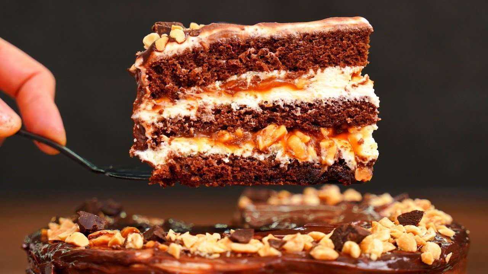

Тортик Снікерс

Інградієнти для бісквіту:
- 300 г цукру
- 300 г борошна
- 2 ч. л. ванільного цукру
- 2 ст. л. оцту(краще яблучного)
- 120 г рослинної олії без запаху
- 250 мл молока
- 4 яйця
- 80 г кокао(для випічки)
- 1 неповна ч.л. солі
- 2 ч. л. харчової соди
- 2 ч. л. розпушувача
Інградієнти для крему:
- 300 г вареного згущеного молока
- 250 г арахісу
- 150 г вершкового масла
Інградієнти для прикраси(не обов'язково)
- 50 г арахісу
- 100 г молочного шоколаду
- 2 ст. л. тростинного цукру(можна і звичайного білого)